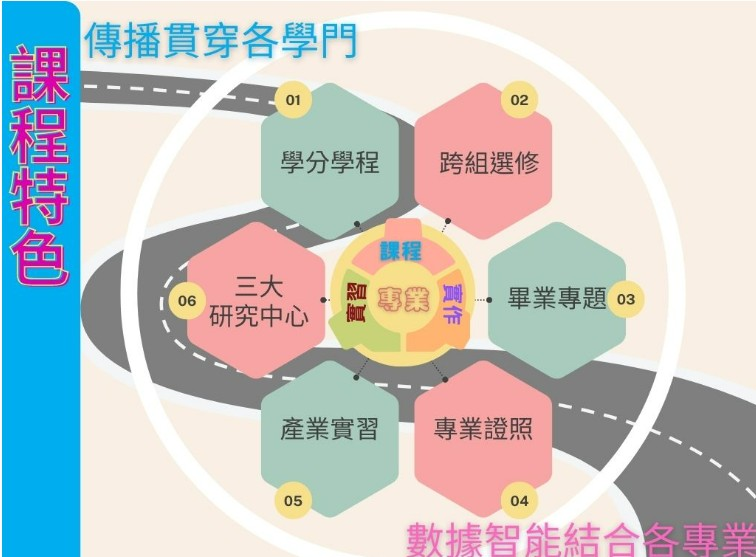

本系課程涵蓋了「資訊」與「管理」兩大領域，強調理論實務並重，重點科目包含程式設計、資訊軟體開發、企業資訊應用、企業經營管理、網路應用與資訊安全管理等相關課程，畢業校友不論在職場上工作或繼續深造都有傑出表現。 為提升教學與研究的品質和深度，本系成立了多個研究中心，建置豐富的設備，力求教學與實務結合。並提供多方位的實習機會，讓同學畢業之前就能親身體會職場實務，了解本身優缺點，更珍惜學習機會。 本系重點課程「畢業專題實作」要求同學在畢業前組隊完成一個完整的系統作品，以培養實作能力。每年舉辦畢業展及晚會，吸引企業界及學術界先進參觀，頗受讚譽。參加國內競賽更屢獲大獎，除提高本系聲譽之外，並為同學畢業發展建立了良好的契機。
世新資管系，融合了世新大學的傳播特色，著重以數據商務傳播與媒體科技應用等。 在課程設計上，除了可和學校媒體科技結合外，有很多元的資訊領域可做探索和跨域學習，包含了人工智慧、大數據、雲端應用與證照、智慧物聯、區塊鏈、元宇宙、資訊安全等。 有近八成的課程都在電腦教室中進行，手把手的實作學習方式，紮實地培養同學畢業前，製作出資訊作品的能力。
| 基礎課程 | 核心能力課程 | ||
|
1.運酸思維與程式設計 2.程式設計一 3.程式設計二 4.管理學 |
數據商務分析能力 | 智慧創新能力 | 企業資源規劃能力 |
| 總整課程 |
1.數據分析技法 2.資料科學應用 3.社群平台應用開發 4.生成式AI應用開發 5.人工智慧創作應用 6.資料視覺化 7.商業智慧 |
1.雲端入門 2.智慧企業導論 3.雲端資料平台 4.顧客關係管理實務 5.智慧企業開發平台 6.智慧企業洞悉 7.智慧企業專題 |
1.企業概論 2.企業資源規劃 3.企業資源規劃實務 4.生產與作業管理 5.專案管理 6.企業資源規劃程式設計 7.供應鏈管理 |
|
1.畢業專題(一) 2.畢業專題(二) 3.畢業專題管理實務 4.產業實務 |
|||
| 跨域課程 | |||
|
1.雲端入門 2.大數據商情分析 3.視覺化儀表盤製作 |
|||
資管組融合了世新大學特色，著重以數據商務傳播與媒體科技應用。 資管組的主軸是大數據資料分析、雲端智慧企業與企業資源規劃(ERP) 隨著雲端服務成為顯學，資管組加強培養同學，在雲端環境中，軟硬體的佈建與運用能力，上百位同學通過了國際雲端證照。 資管組雖與其它兩組不同，但除分組必修，皆可跨組選課，如人工智慧、智慧物聯、區塊鏈、元宇宙、資訊安全等。 在新穎電腦教室，以實務操作方式學習，培養製作資訊作品的能力。同時安排實習課程，協助同學成功就業。
| 基礎課程 | 核心能力課程 | ||
|
1.全媒體識讀 2.程式設計/物件導向程式設計 3.資料結構/演算法 4.電腦網路 5.資料庫系統 |
人工智慧創作應用能力 | 科技傳播能力 | 資訊科技與應用能力 |
| 總整課程 |
1.人工智慧 2.機器學習應用 3.電腦視覺與深度學習 4.語音生成與對話應用 5.生成式AI應用開發 6.人工智慧創作應用 7.電腦圖學與AI影像生成 |
1.雲端架構/運算 2.遊戲製作 3.互動系統設計 4.多媒體軟體應用 5.元宇宙導論 6.智慧聯網 7.資料視覺化 |
1.虛擬化與私有雲實務 2.資訊(網路)安全/實務 3.網頁/網路程式設計 4.行動裝置程式設計 5.無線網路技術 6.Linux認證 7.資料科學應用 |
|
1.畢業專題(一) 2.畢業專題(二) 3.專題研究 4.畢業專題管理實務 5.產業實務 |
|||
資科組的課程包括程式設計、資訊安全、資料庫系統以及 APP開發 (Android/iOS) 等 這些都是現今資訊產業非常熱門的領域，學習主要以實務技能和應用為主，可直接應用在實務工作中。 資訊類在就業市場向來十分熱門。畢業學長姐選擇的職業領域，包括：軟體工程師、資料庫管理師、演算法工程師、資安管理師、AI人工智慧研發工程師等。而隨著數位轉型不斷加速，所有產業都需要資訊專業人才。依據畢業生流向調查顯示，資訊專長的畢業生總是能快速且找到較高薪酬的工作。總體而言，資科組的學習內容涵蓋了多元的資訊科技技能，同學可多元探索找到合適自己的職涯道路。
| 基礎課程 | 核心能力課程 | ||
|
1.全媒體識讀 2.程式設計/物件導向程式設計 3.資料結構/演算法 4.電腦網路 5.資料庫系統 |
人工智慧創作應用能力 | 科技傳播能力 | 資訊科技與應用能力 |
| 總整課程 |
1.人工智慧 2.機器學習應用 3.電腦視覺與深度學習 4.語音生成與對話應用 5.生成式AI應用開發 6.人工智慧創作應用 7.電腦圖學與AI影像生成 |
1.雲端架構/運算 2.遊戲製作 3.互動系統設計 4.多媒體軟體應用 5.元宇宙導論 6.智慧聯網 7.資料視覺化 |
1.虛擬化與私有雲實務 2.資訊(網路)安全/實務 3.網頁/網路程式設計 4.行動裝置程式設計 5.無線網路技術 6.Linux認證 7.資料科學應用 |
|
1.畢業專題(一) 2.畢業專題(二) 3.專題研究 4.畢業專題管理實務 5.產業實務 |
|||
現今數位生活中，無論個人或企業都脫離不了網路與雲端服務，具備相關專長即是就業保證。世新大學資管系智慧網路組除開設有網路基礎課程，網路程式設計課程，專業證照課程外。並精心規劃智慧物聯網與雲端服務特色課程，如人工智慧導論、智慧聯網、網路安全、雲端架構、雲端運算等課程，培養具備扎實基礎能力與職場即戰力的次世代網路專業人才 智慧網路組為同學規劃扎實的國際證照課程，如CISCO C C N A、R H C S A、Amazon雲端證照等。畢業學長姐，常擔任的工作有網路系統工程師，網路應用程式設計師、網路規劃與管理工程師、網路安全分析師、雲端工程師與雲端架構師。歷屆畢業生任職於國內資訊大廠及大型銀行，如鴻海、華碩、宏碁、緯創、中國信託銀行、彰化銀行、永豐銀行等。
| 組別 | 資管組 | 資科組 | 智網組 |
|---|---|---|---|
| 教育目標 |
1.人工智慧應用能力 2.·商務數據分析能力 3.智慧企業應用ERP、CRM人才培養 4.數位轉型與創新能力 5.數位媒體科技應用能力 |
1.人工智慧應用與開發能力 2.智慧物聯應用與開發能力 3.雲端平台規畫與管理能力 4.遊戲設計與製作能力 5.數位媒體科技創新與應用能力 |
1.人工智慧應用與開發能力 2.智慧物聯應用與開發能力 3.雲端平台規畫與管理能力 4.遊戲設計與製作能力 5.數位媒體科技創新與應用能力 |
| 共同課程 | 管理學、程式設計與AI協作、大數據導論、系統分析與設計、資料庫系統、電腦網路、網頁程式設計、行動裝置程式設計、畢業專題 | ||
| 專業課程 | 智慧企業導論、數據分析技法、雲端入門、雲端計算平台、商業智慧、AI賦能商模轉型與創新、顧客關係管理、企業資源規劃實務等 | 生成式AI應用開發、人工智慧兼機器學習、電腦視覺與AI圖像生成、遊戲製作、元宇宙AR/VR、資訊安全、智慧機器人應用、語音生成與對話應用、雲端架構與管理、智慧聯網、人工智慧應用數學、深度學習實務等 | 生成式AI應用開發、人工智慧兼機器學習、電腦視覺與AI圖像生成、遊戲製作、元宇宙AR/VR、資訊安全、智慧機器人應用、語音生成與對話應用、雲端架構與管理、智慧聯網、人工智慧應用數學、深度學習實務等 |
| 學制 | 碩士班 | 碩士在職班 |
|---|---|---|
| 教育目標 |
1.培養企業資訊 2.技術研發及電腦網路通訊人才 3.學生可從事資訊產業研發及資訊應用 4.培養學術研究能力 |
1.人工智慧應用與開發能力 2.智慧物聯應用與開發能力 3.雲端平台規畫與管理能力 4.遊戲設計與製作能力 5.數位媒體科技創新與應用能力 |
| 專業課程 | 生成式AI 應用實務、國際企業管理實務、管理大師講座、人力資源管理,大數據資料探勘、企業資源規劃、研 究方法、高等行動通訊、高等資料庫、高等資訊安全、高等電腦網路、電子商務之經營模式、網路創業專題、高 等多媒體色彩科技與應用、機器學習與深度學習實務、人工智慧個案研究、高等作業系統、高等電腦繪圖、高等 網路管理、高等應用統計學、無線網路規劃與容量管理、電子商務市場策略研究、雲端運算、0高等電腦視覺與 深度學習應用、創新創意與創業專題、數據洞悉與視覺化、大數據資料庫系統、數位及創新行銷、全球產業分析、 多變項分析、行動通訊責務、專案管理實務、Python資料科學程式設計、企業經營責務、數位轉型與創業、組 織理論與管理實務、雲端管理實務、大數據分析、產業實務專題、產業數位轉型個案應用 | |
| \ \ |
產業電子化 | 企業資源規劃 | 大數據課程 | 人工智慧科技應用 | 智慧物聯網(微學程) |
|---|---|---|---|---|---|
| 目標 | 培養網際網路時代資訊化社會所需要的產業電子化人才 | 培養企業e化所需的企業資源規劃專業人才 | 培養大數據運算與資料分析所需之相關專業人才 | 培育人工智慧相關產業所需的整合性科技人才,以協助產業進行智動化升級 | 為培育智慧物聯網專業人才,提升同學在相關領域的實務與創新能力,並符合科技發展潮流 |
| 核心課程 |
1.商業智慧 2.知識管理 3.顧客關係管理 |
1.企業概論 2.企業資源規劃 3.企業資源規劃實務 |
1.數據分析技法 2.智慧企業洞悉 3.資料科學應用 4.數據洞悉與視覺化 5.機器學習應用 |
1.人工智慧/機器學習 2.深度學習實務 3.電腦視覺 4.智慧機器人 5.語音生成與對話 6.生成式AI應用開發 |
1.雲端運算 2.智慧聯網 3.資訊安全實務 4.全端網頁程式設計與應用 |
| 資訊類 | 電腦網路 | 雲端網路 | 資訊安全 | 作業系統 | 程式語言 | 多媒體系統 |
|---|---|---|---|---|---|---|
|
|
Cisco CCNA網路工程師認證 |
1.微軟雲端網路Azure認證 2.AWS認證 |
1.經濟部工業局iPAS初級資訊安全工程師認證 2.Fortnet網路安全專家認證 |
Red Hat Linux RXCSA認證 |
1.Java 2.Python 3.R |
1.Animate CC專業級認證 2.Dreamweaver專業級認證 |
| 管理類 | 專業管理 | 商業智慧 | 企業資源規劃 | |||
|
|
專業管理助理(PMA)認證 | 商業智慧BI規劃師認證 |
1.初階ERP規劃師認證 2.ERP軟體應用師認證 |
|||
想要進一步了解「資管系證照龍計畫」,請和證照辦公室郭明煌老師聯繫(mhguo@mail.shu.edu.tw)